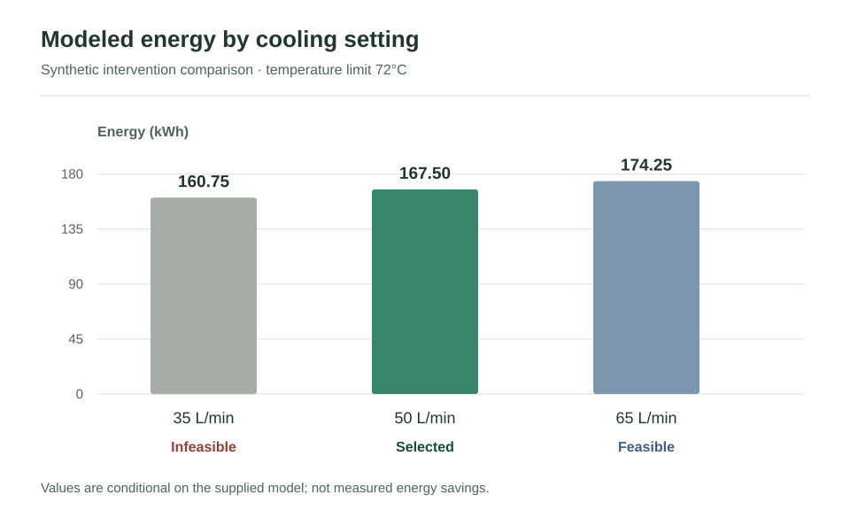

Understand causes
Explore relationships and causal effects using scientific methods, supported by domain expertise.
MIRA CAUSAL AI / RESEARCH & ENGINEERING
Go beyond predictions. Explore causal relationships, simulate possible interventions and compare decisions with expert knowledge and clear assumptions.
Minimize modeled energy while keeping machine temperature at or below 72°C.
CAPABILITIES
Causal intelligence is more than finding correlations. The aim is to understand systems, test scenarios and make informed choices.
Explore relationships and causal effects using scientific methods, supported by domain expertise.
Use explicit causal models to explore interventions, scenarios and counterfactual questions.
Weigh outcomes against objectives and constraints, with calculations you can inspect.
Connect expert assumptions, evidence and reusable causal understanding across investigations.
SEE MIRA IN ACTION
An industrial cooling example with 600 observations, 15 reported temporal relationships and three evaluated actions.

04 / SELECTED PUBLICATIONS
Research led by Dr. Tamas Fekete, PhD, with 15 years of industrial software engineering experience.
International Journal of Production Research, 64(7), 2531–2568
Causal discovery and inference applied to energy and process-cost drivers in manufacturing.
Publisher / DOIInternational Journal of Sustainable Transportation, 20(5), 458–478
An ontology-guided causal framework for exploring vehicle-emission drivers.
Publisher / DOISustainable Cities and Society, 122, 106240
Causal time-series analysis of Budapest bike-sharing patterns.
Publisher / DOIHAVE A USE CASE?
Research questions, ideas and collaboration proposals are welcome.